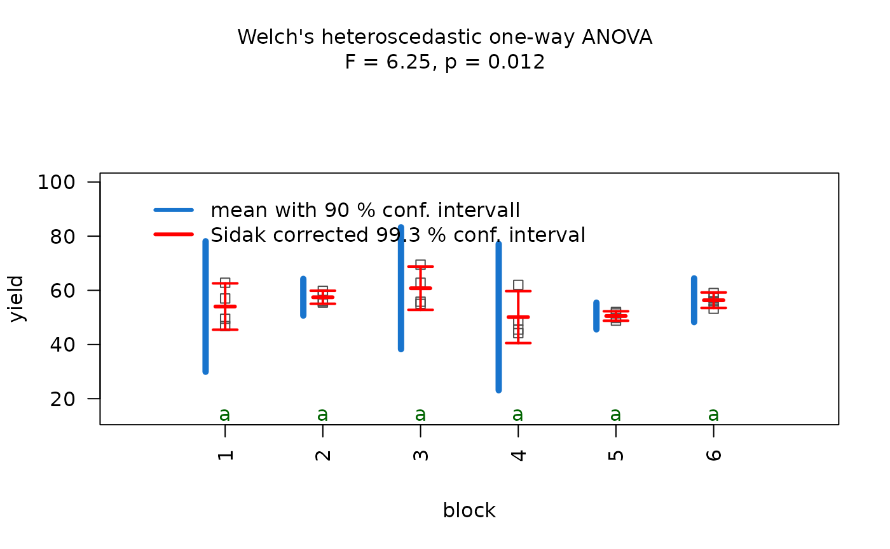
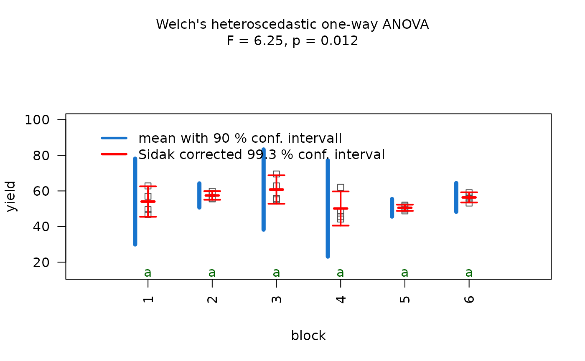
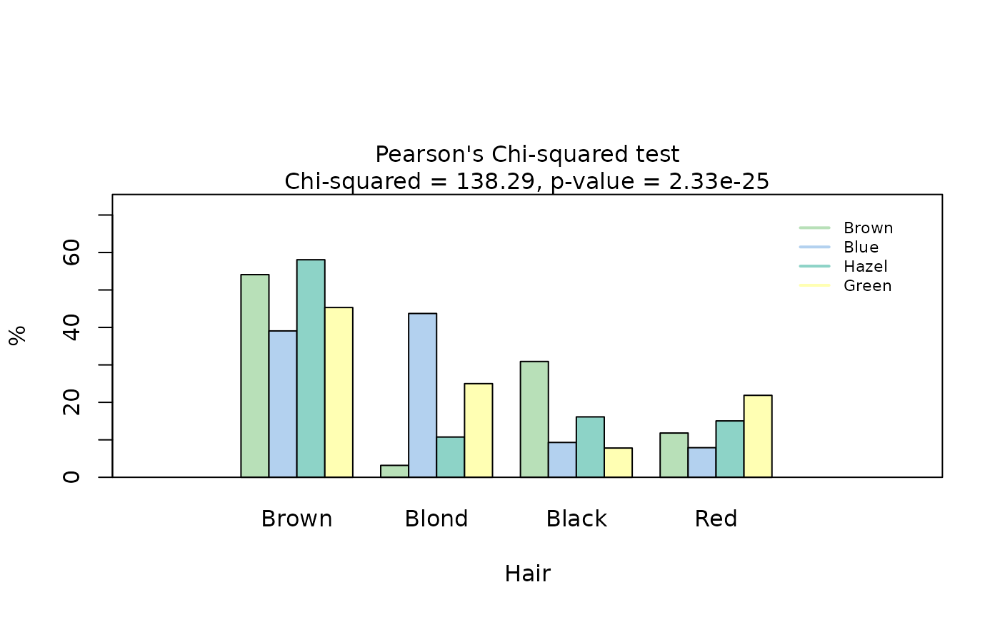

visStatistics: The right test, visualised
Sabine Schilling
Institute of Tourism and Mobility, Lucerne University of Applied Sciences and Artssabine.schilling@protonmail.com
2025-06-29
Source:vignettes/visStatistics.Rmd
visStatistics.RmdAbstract
visStatistics automatically selects and visualises
appropriate statistical hypothesis tests between two column vectors of
type of class "numeric", "integer", or
"factor". The choice of test depends on the
class, distribution, and sample size of the vectors, as
well as the user-defined ‘conf.level’. The main function
visstat() visualises the selected test with appropriate
graphs (box plots, bar charts, regression lines with confidence bands,
mosaic plots, residual plots, Q-Q plots), annotated with the main test
results, including any assumption checks and post-hoc analyses. This
scripted workflow is particularly suited for browser-based interfaces
that rely on server-side R applications connected to secure databases,
where users have no direct access, or for quick data visualisations and
test selection, e.g., in statistical consulting projects.
Introduction
While numerous R packages provide statistical testing functionality, few are designed with pedagogical accessibility as a primary concern. The visStatistics package addresses this challenge by automating test selection using deterministic decision logic, removing the burden of manual test choice. This automation enables users to focus directly on interpreting statistical outcomes rather than navigating test selection.
The tailored visual outputs—annotated with test results and, where appropriate, assumption checks and post-hoc analyses—further support comprehension and help ensure valid conclusions from the outset. The package is particularly valuable in statistical consulting for student research projects, where time constraints demand streamlined, assumption-aware output that prioritises interpretation over technical execution. The implemented tests cover the typical content of an introductory undergraduate course in statistics.
The package also suits server-based applications where users have limited interaction: they provide only two input vectors, and the software returns valid, interpretable results without requiring further statistical knowledge. This supports reproducibility and correct inference even in such constrained environments.
The remainder of this vignette is organised as follows:
Section 3 focuses on the installation and the main function call.
Section 4 briefly introduces the General Linear Model and the testing of its assumptions in
visstatistic.Section 5 summarises the decision logic used to select a statistical test.
Sections 6–8 provide background on the implemented tests and illustrate the decision logic using examples. Function names in parentheses in the headings indicate the corresponding statistical hypothesis test function in R.
Section 9 outlines the main limitations of the package.
Section 10 provides an overview of the implemented tests.
Getting started
3. Minimal function call
The function visstat() accepts input in two ways:
# Standardised form (recommended):
visstat(x, y)
# Backward-compatible form
visstat(dataframe, "namey", "namex")In the standardised form, x and y must be
vectors of class "numeric", "integer", or
"factor".
In the backward-compatible form, "namex" and
"namey" must be character strings naming columns in
dataframe, which must themselves be of class
"numeric", "integer", or
"factor". This is equivalent to writing:
visstat(dataframe[["namex"]], dataframe[["namey"]])General linear model (GLM)
General Linear Models (GLM) (Searle 1971) are linear regression
models for a continuous response variable and given continuous and/or
categorical predictors. They provide a unified mathematical framework
underlying many common statistical tests like t-tests, ANOVA, and simple
linear regression implemented in visStatistics.
These tests are not distinct statistical methods, but rather different implementations of the same underlying mathematical framework.
The GLM can be expressed in matrix form as:
where:
- is an vector of observed responses
-
is an
design matrix containing predictor variables
- is a vector of unknown parameters
- are independent error (=residual) terms
The least squares solution minimizing the sum of squared residuals is:
All GLM variants assume the response vector follows , where the mean structure connects predictors to response through different design matrices . Since these methods share identical distributional assumptions, they require the same diagnostic procedures and assumption checking - revealing the fundamental unity underlying seemingly distinct tests.
The assumptions of the GLM (vis_anova_assumptions())
The key assumptions of the GLM are:
- Independence of observations**: each observation is independent of others
- Linearity: the relationship between predictors and response is linear
- Normality of residuals:
- Homoscedasticity: constant variance of residuals ( is constant)
The function vis_anvaa_assumption() checks the normality
of the standardized residuals by providing
diagnostic plots (Q-Q plots, residual vs. fitted values and histograms
of residuals ) alongside formal tests (Shapiro-Wilk, Anderson-Darling
for testing the normality of the residuals.
For testing homoscedacity), Levene-Test and Bartlett test or testing homoscedacity) help users assess whether the assumptions of the GLM are reasonably met.
Normality of residuals (shapiro.test() and
ad.test())
The vis_anova_assumptions() function evaluates the
normality of standardised residuals from the aov()-model
(which itself is a wrapper function for categorical features around the
lm() function) using both the Shapiro–Wilk test
(shapiro.test()) and the Anderson–Darling test
(ad.test())(Gross and Ligges 2015). These tests
offer complementary strengths: Shapiro–Wilk generally exhibits greater
power across a range of non-normal distributions in small samples,
whereas Anderson–Darling is highly sensitive to tail deviations and
performs reliably in larger samples (Razali and Wah 2011; Yap and Sim 2011).
Assessing assumptions solely through p-values can lead to both type I errors (false positives) and type II errors (false negatives). In large samples, even minor, random deviations from the null hypothesis—such as the assumption of normality—can result in statistically significant p-values, leading to type I errors. Conversely, in small samples, substantial violations of the assumption may not reach statistical significance, resulting in type II errors (Kozak and Piepho 2018).
Thus, the robustness of statistical tests depends on both the sample size and the shape of the underlying distribution. This is evident in the limitations of the normality tests used: for instance, the Shapiro–Wilk test is unreliable for large samples (), while the Anderson–Darling test requires at least 7 observations.
Moreover, assumption tests provide no information on the nature of
deviations from the expected distribution (Shatz 2024). Therefore, the assessment
of normality should not rely solely on p-values but should be
complemented by visual inspection. visstat() produces
diagnostic plots including: (1) a histogram of the standardised
residuals overlaid with the standard normal distribution, (2) a scatter
plot of the standardised residuals versus the fitted values for each
predictor level, and (3) a Q–Q plot of the residuals.
Since algorithmic logic cannot replace the combination of formal tests and expert visual judgement, the function defaults to assuming normality if the Shapiro–Wilk test yields a p-value greater than alpha. Simulation studies suggest that Shapiro–Wilk has the highest power among normality tests in small to moderate samples (Razali and Wah 2011).
Equal variances across groups
(levene.test() and bartlett.test())
Both aov() and oneway.test() assess whether
two or more samples drawn from normal distributions have the same mean.
While aov() assumes homogeneity of variances across groups,
oneway.test() does not require equal variances.
The decision logic of visStatistics assumes homogeneity
of variances if the Levene–Brown–Forsythe test (implemented as
levene.test()) (Brown and Forsythe 1974) yields a
p-value greater than
.
The Levene–Brown–Forsythe test evaluates the null hypothesis that all groups have equal variances by testing whether the absolute deviations from group medians are equal across groups.
For each observation in group , it computes the absolute deviation from the group median:
,
where is the median of group .
The test statistic is the F-statistic from a one-way ANOVA on the values:
where is the number of groups, is the total sample size, is the sample size of group , is the mean of absolute deviations from the median in group , and is the overall mean of all absolute deviations.
Under the null hypothesis of equal variances, the test statistic follows an F-distribution: .
The Levene–Brown–Forsythe test improves upon Levene’s original test
(Levene
1960) by using the median instead of the mean to centre the
data. This makes it more robust to skewed data or data with outliers
providing more reliable results in many practical situations. Note that
levene.test() mimics the default behaviour of
leveneTest() in the car package (Fox and Weisberg
2019).
Additionally, homoscedasticity is assessed via Bartlett’s test
(bartlett.test()), which has more power than the
Brown–Forsythe version of Levene’s test (Brown and Forsythe 1974) when the
normality assumption is met (Allingham and Rayner 2012)
Bartlett’s test evaluates whether sample variances are equal across normally distributed groups. The test statistic is
where is the sample variance of group , and is the pooled variance:
Under the null hypothesis that all group variances are equal and the data are normally distributed, the test statistic approximately follows a -distribution with degrees of freedom (Bartlett 1937).
Decision logic
Throughout the remainder, data of class "numeric" or
"integer" are referred to by their common mode
numeric, while data of class "factor" are
referred to as categorical. The significance level
,
used throughout for hypothesis testing, is defined as
1 - conf.level, where conf.level is a
user-controllable argument (defaulting to 0.95).
The choice of statistical tests performed by the function
visstat() depends on whether the data are numeric or
categorical, the number of levels in the categorical variable, the
distribution of the data, as well as the user-defined ‘conf.level’.
The function prioritizes interpretable visual output and tests that remain valid under the following decision logic:
Numeric response and categorical predictor: Comparing central tendencies
When the response is numeric and the predictor is categorical, a statistical hypothesis test of central tendencies is selected.
If the categorical predictor has exactly two levels, Welch’s t-test (
t.test()) is applied when both groups contain more than 30 observations. This heuristic is based on the central limit theorem, which ensures approximate normality of the sampling distribution of the mean (Rasch, Kubinger, and Moder 2011; Lumley et al. 2002; Kwak and Kim 2017). Welch’s t-test is the default method in R for comparing means and is generally preferred over Student’s t-test because it does not assume equal variances. It maintains comparable power even when variances are equal and outperforms Student’s test when variances differ (Moser and Stevens 1992; Fagerland and Sandvik 2009; Delacre, Lakens, and Leys 2017).For smaller samples, group-wise normality is assessed using the Shapiro-Wilk test [SHAPIRO and WILK (1965) (
shapiro.test()) at a significance level . Simulation studies show that the Shapiro-Wilk test is the most powerful for detecting non-normality across most distributions, especially with smaller sample sizes.(Razali and Wah 2011; Ghasemi and Zahediasl 2012) If both groups are found to be approximately normally distributed according to the Shapiro–Wilk test, Welch’s t-test is applied; otherwise, the Wilcoxon rank-sum test (wilcox.test()) is used.For predictors with more than two levels, a model of Fisher’s one-way analysis of variables (ANOVA) (
aov()) is initially fitted. The normality of residuals is evaluated by the Shapiro-Wilk test (shapiro.test()); residuals are considered approximately normal if it yields a result exceeding the significance threshold . If this condition is met, the Levene–Brown–Forsythe test (implemented aslevene.test()) (Brown and Forsythe 1974) assesses homoscedasticity. When variances are homogeneous (), Fisher’s one-way ANOVA (aov()) is applied with Tukey’s Honestly Significant Differences (HSD) (TukeyHSD()) for post-hoc comparison. If variances differ significantly (), Welch’s heteroscedastic one-way ANOVA (oneway.test()) is used, also followed by Tukey’s HSD. If residuals are not normally distributed according to both tests (), the Kruskal–Wallis test (kruskal.test()) is selected, followed by pairwise Wilcoxon tests (pairwise.wilcox.test()). A graphical overview of the decision logic used is provided in the figure below.

Decision tree used to select the appropriate statistical test for a categorical predictor and numeric response, based on the number of factor levels, normality, and homoscedasticity.
Numeric response and numeric predictor: Simple linear regression
When both the response and predictor are numeric, a simple linear
regression model (lm()) is fitted and analysed in detail,
including residual diagnostics, formal tests, and the plotting of fitted
values with confidence bands. Note that only one
predictor variable is allowed, as the function is designed for
two-dimensional visualisation.
Both variables categorical: Comparing proportions
When both variables are categorical, no direction is assumed; the order of variables in the function call does not affect the test statistic, but it does influence the graphical output. For consistency, we continue referring to the variables as predictor and response.
visstat() tests the null hypothesis that the variables
are independent using either Pearson’s
test (chisq.test()) or Fisher’s exact test
(fisher.test()), depending on expected cell counts. The
choice of test is based on Cochran’s rule (Cochran 1954), which advises that
the
approximation is reliable only if no expected cell count is less than 1
and no more than 20 percent of cells have expected counts below 5.
Numeric response and categorical predictor: Comparing central tendencies
When the predictor consists of class
“factor†with two or more levels and the response is of
class “numeric†or “integer”
(both having mode “numeric”), statistical tests are applied
to compare the central tendencies across groups. This section describes
the conditions under which parametric and non-parametric tests are
chosen, based on the response type, the number of factor levels, and the
underlying distributional assumptions.
Categorical predictor with two levels: Welch’s t-test and Wilcoxon rank-sum
When the predictor variable has exactly two levels, Welch’s t-test or the Wilcoxon rank-sum test is applied.
Welch’s t-test (t.test())
Welch’s t-test (t.test()) assumes that the observations
are independent and that the response variable is approximately normally
distributed within each group.
It evaluates the null hypothesis that the means of two groups are equal without assuming equal variances.
The test statistic is given by (Welch 1947; Satterthwaite 1946)
where and are the sample means, and the sample variances, and , the sample sizes in the two groups. The statistic follows a t-distribution with degrees of freedom approximated by the Welch-Satterthwaite equation:
The resulting p-value is computed from the t-distribution with degrees of freedom.
Welch’s t-test remains valid and exhibits only minimal loss of power even when the assumptions of Student’s t-test – namely, normality and equal variances of the response variable across groups – are satisfied (Moser and Stevens 1992; Delacre, Lakens, and Leys 2017). It is therefore the default implementation of the t-test in R.
Wilcoxon rank-sum test (wilcox.test())
The two-sample Wilcoxon rank-sum test (also known as the Mann-Whitney test) is a non-parametric alternative that does not require the response variable to be approximately normally distributed within each group. It tests for a difference in location between two independent distributions (Mann and Whitney 1947). If the two groups have distributions that are sufficiently similar in shape and scale, the Wilcoxon rank-sum test can be interpreted as testing whether the medians of the two populations are equal (Hollander, Chicken, and Wolfe 2014).
The two-level factor variable x defines two groups, with
sample sizes
and
.
All
observations are pooled and assigned ranks from
to
.
Let
denote the sum of the ranks assigned to the group
corresponding to the first level of x containing
observations:
,
where is the rank of observation in the pooled sample.
The test statistic
returned by wilcox.test() is then computed as
It corresponds to the Mann-Whitney (Mann and Whitney 1947) statistic of the first group.
If both groups contain fewer than 50 observations and the data contain no ties, the p-value is computed exactly. Otherwise, a normal approximation with continuity correction is used.
Graphical output
Both tests show two plot panes, the first for checking the assumption of normality in both groups, the second the actual data with the chosen test.
Welch’s t-test does not fit a regression model, so there are no
“residuals” in the regression sense. Therefore the function
vis_ttest_assumptions()generates histograms overlaid with
the normal distribution for both groups acompanied by the p-values of
shapiro.test() and ad.tset().
The graphical output of the second pane consists of box plots
overlaid with jittered points to display individual observations. When
Welch’s t-test is applied, the function includes confidence intervals
based on the user-specified conf.level.
The function returns a list containing the results of the applied test and the summary statistics used to construct the plot.
Examples
Welch’s t-test
The Motor Trend Car Road Tests dataset (mtcars)
contains 32 observations, where mpg denotes miles per (US)
gallon, and am represents the transmission type
(0 = automatic, 1 = manual).
Increasing the confidence level conf.level from the
default 0.95 to 0.99 results in wider confidence intervals, as a higher
confidence level requires more conservative bounds to ensure that the
interval includes the true parameter value with greater certainty.
Wilcoxon rank sum test
The Wilcoxon rank sum test is exemplified on differences between the central tendencies of grades of “boys†and “girls†in a class:
grades_gender <- data.frame(
sex = as.factor(c(rep("girl", 21), rep("boy", 23))),
grade = c(
19.3, 18.1, 15.2, 18.3, 7.9, 6.2, 19.4,
20.3, 9.3, 11.3, 18.2, 17.5, 10.2, 20.1, 13.3, 17.2, 15.1, 16.2, 17.0,
16.5, 5.1, 15.3, 17.1, 14.8, 15.4, 14.4, 7.5, 15.5, 6.0, 17.4,
7.3, 14.3, 13.5, 8.0, 19.5, 13.4, 17.9, 17.7, 16.4, 15.6, 17.3, 19.9, 4.4, 2.1
)
)
wilcoxon_statistics <- visstat(grades_gender$sex, grades_gender$grade)

Categorical predictor with more than two levels
If the predictor is of class “factor†with
more than two levels and the response is of
mode “numeric”, visstat() either
performs Fisher’s one- way ANOVA (Roland A. Fisher 1971)
(aov()), Welch’s heteroscedastic one-way ANOVA (Welch 1951)
(oneway.test()) or, as a non-parametric alternative, the
Kruskal -Wallis test (Kruskal and Wallis 1952)
(kruskal.test()).
In the remainder of this section, we briefly introduce the tests themselves, the assumption checks, and the post-hoc procedures, and illustrate each test with an example.
Fisher’s one-way ANOVA (aov())
Fisher’s one-way ANOVA (aov()) tests the null hypothesis
that the means of multiple groups are equal. It assumes independent
observations, normally distributed residuals, and
homogeneous variances across groups. The test statistic
is the ratio of the variance explained by differences among group means
(between-group variance) to the unexplained variance within groups (Ronald A. Fisher and Yates
1990)
where: - where
and
are the mean square between groups and mean Square within groups
respectively. -
= Sum of Squares between groups (variance due to group differences) -
= Sum of Squares within groups (error variance)
-
= number of groups -
= total sample size
where is the mean of group , is the overall mean, is the observation in group , is the sample size in group , is the number of groups, and is the total number of observations.
Under the null hypothesis, this statistic follows an F-distribution with two parameters for degrees of freedom: () and (): The resulting p-value is computed from this distribution.
Welch’s heteroscedastic one-way ANOVA
(oneway.test())
When only the assumptions of independent observations and normally
distributed residuals are met, but homogeneous variances across
groups cannot be assumed , Welch’s heteroscedastic one-way
ANOVA (oneway.test()) (Welch 1951) provides an alternative to
aov(). It compares group means using weights based on
sample sizes and variances. The degrees of freedom are adjusted using a
Satterthwaite-type approximation (Satterthwaite 1946), resulting
in an F-statistic with non-integer degrees of freedom.
Kruskal–Wallis test (kruskal.test())
When the assumption of normality is not met, the Kruskal–Wallis test provides a non-parametric alternative. It compares group distributions based on ranked values and tests the null hypothesis that the groups come from the same population — specifically, that the distributions have the same location (Kruskal and Wallis 1952). If the group distributions are sufficiently similar in shape and scale, then the Kruskal–Wallis test can be interpreted as testing for equality of medians across groups (Hollander, Chicken, and Wolfe 2014).
The test statistic is defined as:
where is the sample size in group , is the number of groups, is the average rank of group , is the total sample size, and is the average of all ranks. Under the null hypothesis, approximately follows a distribution with degrees of freedom.
Testing the assumptions (vis_anova_assumptions())
The test logic for aov() and oneway.test()
follows from their respective assumptions. visstat()
initially models the data using aov() and analyses the
residuals.
If both of the following conditions are met: (1) the standardised
residuals follow the standard normal distribution, and (2) the residuals
exhibit homoscedasticity (equal variances across groups), then the test
statistic from aov() is returned.
If only the normality assumption is satisfied, visstat()
applies oneway.test(). If the normality assumption is
violated, kruskal.test() is used instead.
These assumptions are tested using the
vis_anova_assumptions() function.
Controlling the family-wise error rate
ANOVA is an omnibus test that evaluates a single null hypothesis: all group means are equal. If the null hypothesis gets rejected, we would like to identify which specific groups differ significantly from each other. However, simple pairwise comparisons of group means following an ANOVA increases the probability of incorrectly declaring a significant difference when, in fact, there is none.
This error is quantified by the family-wise error rate “alpha per family of tests†, which refers to the probability of making at least one Type I error, that is, falsely rejecting the null hypothesis across all pairwise comparisons.
Given levels of the categorical variable, there are
pairwise comparisons possible, defining a family of tests (Abdi 2007). corresponds to the number of null hypotheses in the post hoc tests, each testing whether the means of two specific groups are equal.
Post-hoc analysis
Šidák correction
If (“alpha per test”) is the probability of making a Type I error in one comparison, then is the probability of not making a Type I error in one comparison.
If all comparisons are independent of each other, the probability of making no Type I error across the entire family of pairwise comparisons is . The family-wise error rate is then given by its complement (Abdi 2007):
Solving the last equation defining for yields the Šidák equation (Šidák 1967):
This shows that, in order to achieve a given family-wise error rate, the corresponding per-test significance level must be reduced when there are more than two groups.
visstat() sets
to the user-defined
conf.level, resulting in
With the default setting conf.level = 0.95, this leads
to:
- groups:
- groups:
- groups:
These examples illustrate that the Šidák approach becomes increasingly conservative as the number of comparisons grows. Moreover, since the method assumes independence among tests, it may be overly conservative when this assumption is violated.
Post-hoc test following an ANOVA:
TukeyHSD()
In contrast to the general-purpose Šidák correction, Tukey’s Honestly
Significant Differences procedure (TukeyHSD()) is
specifically designed for pairwise mean comparisons following an ANOVA
(either aov() or oneway.test()). It controls
the family-wise error rate using a critical value from the studentised
range distribution, which properly accounts for the correlated nature of
pairwise comparisons sharing a common residual variance (Hochberg and Tamhane
1987).
Based on the user-specified confidence level
(conf.level), visstat() constructs confidence
intervals for all pairwise differences between factor
level means. A significant difference between two means is indicated
when the corresponding confidence interval does not include zero.
visstat() returns both the HSD-adjusted p-values and the
associated confidence intervals for all pairwise comparisons.
For graphical display, visstat() uses a dual approach:
TukeyHSD() provides the statistical test results and
significance determinations, while Šidák-corrected confidence intervals
around individual group means are shown for visualisation purposes. This
separation allows for optimal statistical testing while maintaining
clear, interpretable graphics.
Post-hoc test following the Kruskal–Wallis rank
sum test: pairwise.wilcox.test()
As a post-hoc analysis following the Kruskal–Wallis test,
visstat() applies the pairwise Wilcoxon rank sum test using
pairwise.wilcox.test() to compare each pair of factor
levels (see section “Wilcoxon rank-sum test
(wilcox.test())”).
The resulting p-values from all pairwise comparisons are then adjusted for multiple testing using Holm’s method (Holm 1979): The p-values are first sorted from smallest to largest and tested against thresholds that become less strict as their rank increases. This stepwise adjustment does not assume independence among tests and is typically less conservative than the Šidák method, while still ensuring strong control of the family-wise error rate.
Graphical output
The graphical output for all tests based on a numeric response and a categorical predictor with more than two levels consists of two panels: the first focuses on the residual analysis, the second on the actual test chosen by the decision logic.
The residual panel addresses the assumption of normality, both graphically and through formal tests. It displays a scatter plot of the standardised residuals versus the predicted values, as well as a normal Q–Q plot comparing the sample quantiles to the theoretical quantiles. If the residuals are normally distributed, no more than of the standardised residuals should exceed approximately ; in the Q–Q plot the data points should approximately follow the red straight line.
The p-values of the formal tests for normality (Shapiro–Wilk and Anderson–Darling) as well as the tests for homoscedasticity (Bartlett’s and Levene Brown–Forsythe) are given in the title.
visstat() then illustrates, in the subsequent graph,
either the kruskal.test(), the oneway.test(),
or aov() result (see also Section “Decision logic”).
If neither normality of the residuals nor homogeneity of variances is
given, the kruskal.test() is executed. The result is
illustrated using box plots alongside jittered data points, with the
title displaying the p-value from kruskal.test().
Above each box plot, the number of observations per level is shown.
Different green letters below a pair of box plots indicate that the two
groups are considered significantly different based on Holm’s-adjusted
pairwise Wilcoxon rank sum test p-values smaller than
.
The letters are generated with the help of the function
multcompLetters() from the multcompView
package (Graves,
Piepho, and with help from Sundar Dorai-Raj 2024)).
If normality of the residuals can be assumed, a parametric test is
chosen: either aov(), if homoscedasticity is also assumed,
or oneway.test() otherwise. visstat() displays
the name of the test and the corresponding
and p-value in the title.
The graph shows both the conf.level
confidence intervals corresponding to the null hypothesis of ANOVA (all
group means are equal) and the Šidák-corrected
confidence intervals used in the post hoc analysis.
In visstat(), the Šidák intervals are used only for
visualisation, as the underlying method assumes independent comparisons
and can become overly conservative when this assumption is violated.
The actual post hoc analysis should be based on
TukeyHSD(). A significant test result between two groups is
graphically represented by different green letters below a pair of group
means.
Besides the graphical output, visstat() returns a list
containing the relevant test statistics along with the corresponding
post-hoc-adjusted
-values
for all pairwise comparisons.
Examples
ANOVA
The npk dataset reports the yield of peas (in pounds per
block) from an agricultural experiment conducted on six blocks. In this
experiment, the application of three different fertilisers – nitrogen
(N), phosphate (P), and potassium (K) – was varied systematically. Each
block received either none, one, two, or all three of the
fertilisers,
anova_npk <- visstat(npk$block,npk$yield,conf.level=0.90) 

Normality of residuals is supported by graphical diagnostics
(histogram, scatter plot of standardised residuals, Q-Q plot) and formal
tests (Shapiro–Wilk and Anderson- Darling, both with
).homogeneity
of variances is not supported at the given confidence level by
bartlett.test(), but by levene.test()
().
The decision logic is based on levene.test() and triggers
aov(). Post-hoc analysis with TukeyHSD() shows
no significant yield differences between blocks, as all share the same
group label (e.g., all green letters).
Kruskal–Wallis rank sum test
The iris dataset contains petal width measurements (in
cm) for three different iris species.
visstat(iris$Species, iris$Petal.Width)

In this example, scatter plots of the standardised residuals and the Q-Q plot suggest that the residuals are not normally distributed. This is confirmed by very small p-values from both the Shapiro–Wilk and Anderson-Darling tests.
If both p-values are below the significance level
,
visstat() switches to the non-parametric
kruskal.test(). Post-hoc analysis using
pairwise.wilcox.test() shows significant differences in
petal width between all three species, as indicated by distinct group
labels (all green letters differ).
Numeric response and numeric predictor: Simple linear regression
Simple linear regression (lm())
If both the predictor and the response are numeric and contain only
one level each, visstat() performs a simple linear
regression.
The resulting regression plot displays the point estimate of the regression line
where is the response variable, is the predictor variable, is the intercept, and is the slope of the regression line.
Residual analysis
visstat() checks the normality of the standardised
residuals from lm() both with diagnostic plots and using
the Shapiro–Wilk and Anderson-Darling tests. (via
visAnovassumptions())
Note, that regardless of the result of the residual analysis,
visstat() proceeds to perform the regression. The title of
the graphical output indicates the chosen confidence level
(conf.level), the estimated regression parameters with
their confidence intervals and p-values, and the adjusted
.
The plot displays the raw data, the fitted regression line, and both the
confidence and prediction bands corresponding to the specified
conf.level.
visstat() returns a list containing the regression test
statistics, the p-values from the normality tests of the standardised
residuals, and the pointwise estimates of the confidence and prediction
bands.
Examples
dataset: `trees``
The trees data set contains the diameter
Girth in inches and Volume in cubic ft of 31
black cherry trees.
linreg_trees <- visstat(trees$Girth, trees$Volume,conf.level=0.9)

p-values greater than conf.level in both the
Anderson-Darling normality test and the Shapiro–Wilk test of the
standardised residuals indicate that the normality assumption of the
residuals underlying the linear regression is met.
Increasing the confidence level conf.level from the
default 0.9 to 0.99 results in wider confidence intervals of the
regression parameters as well as wider confidence and prediction
bands
linreg_trees_99 <- visstat(trees$Girth, trees$Volume,conf.level = 0.99)The visStatistics plot allows to display only the second
generated plot (the assumption plot is unchanged):
plot(linreg_trees_99,which=2)
Both variables categorical: Comparing proportions
When both variables are categorical (i.e., of class
factor), visstat() tests the null hypothesis
that the two variables are independent. Observed frequencies are
typically arranged in a contingency table, where rows index the levels
of the response variable and columns index the levels
of the predictor variable.
Pearson’s residuals and mosaic plots
Mosaic plots provide a graphical representation of contingency tables, where the area of each tile is proportional to the observed cell frequency. To aid interpretation, tiles are coloured based on Pearson residuals from a chi-squared test of independence. These residuals measure the standardised deviation of observed from expected counts under the null hypothesis of independence.
Let and denote the observed and expected frequencies in row and column of an contingency table. The Pearson residual for each cell is defined as
Positive residuals (shaded in blue) indicate observed counts greater than expected, while negative values suggest under-representation (shaded in red). Colour shading thus highlights which combinations of categorical levels contribute most to the overall association.
Pearson’s
-test
(chisq.test())
The test statistic of Pearson’s -test (Pearson 1900) is the sum of squared Pearson residuals:
The test statistic is compared to the chi-squared distribution with $ (R - 1)(C - 1)$ degrees of freedom. The resulting p-value corresponds to the upper tail probability — that is, the probability of observing a value greater than or equal to the test statistic under the null hypothesis.
Pearson’s test with Yates’ continuity correction
Yates’ correction is applied to the Pearson statistic in contingency tables (with one degree of freedom). In this case, the approximation of the discrete sampling distribution by the continuous distribution tends to overestimate the significance level of the test. To correct for this, Yates proposed subtracting 0.5 from each absolute difference between observed and expected counts (Yates 1934), resulting in a smaller test statistic:
This reduced test statistic yields a larger p-value, thereby lowering the risk of a Type I error.
Yates’ continuity correction is applied by default by the underlying
routine chisq.test(). ## Fisher’s exact test
(fisher.test())
The
approximation is considered reliable only if no expected cell count is
less than 1 and no more than 20 percent of cells have expected counts
below 5 (Cochran
1954)). If this condition is not met, Fisher’s exact test
(Ronald Aylmer Fisher
1970) (fisher.test()) is applied instead, as it
is a non-parametric method that does not rely on large-sample
approximations. The test calculates an exact p-value for testing
independence by conditioning on the observed margins: the row totals
and the column totals
,
defining the structure of the contingency table.
In the case, the observed table can be written as:
Let denote the above observed contingency table. The exact probability of observing this table under the null hypothesis of independence, given the fixed margins, is given by the hypergeometric probability mass function (PMF)
where is the total sample size.
The p-value is computed by summing the probabilities of all tables with the same margins whose probabilities under the null are less than or equal to that of the observed table.
For general
tables, fisher.test() generalises this approach using the
multivariate hypergeometric distribution.
Test choice and graphical output
If the expected frequencies are sufficiently large - specifically, if
at least 80% of the cells have expected counts greater than 5 and no
expected count is smaller than 1, the function uses Pearson’s
-test
(chisq.test()).
Otherwise, it switches to Fisher’s exact test
(fisher.test()) (Cochran 1954).
For 2-by-2 contingency tables, Yates’ continuity correction (Yates 1934) is always applied to Pearson’s -test.
For all tests of independence visstat() displays a
grouped column plot that includes the respective test’s p-value in the
title, as well as a mosaic plot showing colour-coded Pearson residuals
and the p-value of Pearson’s
-test.
Transforming a contingency table to a data frame
The following examples for tests of categorical predictor and
response are all based on the HairEyeColor contingency
table.
Contingency tables must be converted to the required column-based
data.frame using the helper function
counts_to_cases(). The function transforms the contingency
table HairEyeColor into data.frame named
HairEyeColourDataFrame.
HairEyeColourDataFrame <- counts_to_cases(as.data.frame(HairEyeColor))Examples
In all examples of this section, we will test the null hypothesis that hair colour (“Hair”) and eye colour (“Eye”) are independent of each other.
Pearson’s
-test
(chisq.test())
hair_eye_colour_df <- counts_to_cases(as.data.frame(HairEyeColor))
visstat(hair_eye_colour_df$Eye, hair_eye_colour_df$Hair)
The graphical output shows that the null hypothesis of Pearson’s test – namely, that hair colour and eye colour are independent – must be rejected at the default significance level (). The mosaic plot indicates that the strongest deviations are due to over-representation of individuals with black hair and brown eyes, and of those with blond hair and blue eyes. In contrast, individuals with blond hair and brown eyes are the most under-represented.
Pearson’s -test with Yate’s continuity correction
In the following example, we restrict the data to participants with either black or brown hair and either brown or blue eyes, resulting in a 2-by-2 contingency table.
hair_black_brown_eyes_brown_blue <- HairEyeColor[1:2, 1:2, ]
# Transform to data frame
hair_black_brown_eyes_brown_blue_df <- counts_to_cases(as.data.frame(hair_black_brown_eyes_brown_blue))
# Chi-squared test
visstat(hair_black_brown_eyes_brown_blue_df$Eye, hair_black_brown_eyes_brown_blue_df$Hair)

Also in this reduced dataset we reject the null hypothesis of independence of the hair colors “brown†and “black†from the eye colours “brown†and †blue”. The mosaic plot shows that blue-eyed persons with black hair are under- represented. Note the higher p-value of Pearson’s -test with Yate’s continuity correction (p = 0.00354) compared to the p-value of Pearson’s -test (p = 0.00229) shown in the mosaic plot.
Fisher’s exact test (fisher.test())
Again, we extract a 2-by-2 contingency table from the full dataset, this time keeping only male participants with black or brown hair and hazel or green eyes.
Pearson’s test applied to this table would yield an expected frequency less than 5 in one of the four cells (25% of all cells), which violates the requirement that at least 80% of the expected frequencies must be 5 or greater (Cochran 1954).
Therefore, visstat() automatically selects Fisher’s
exact test instead.
hair_eye_colour_male <- HairEyeColor[, , 1]
# Slice out a 2 by 2 contingency table
black_brown_hazel_green_male <- hair_eye_colour_male[1:2, 3:4]
# Transform to data frame
black_brown_hazel_green_male <- counts_to_cases(as.data.frame(black_brown_hazel_green_male))
# Fisher test
fisher_stats <- visstat(black_brown_hazel_green_male$Eye, black_brown_hazel_green_male$Hair)

Saving the graphical output
All generated graphics can be saved in any file format supported by
Cairo(), including “png”, “jpeg”, “pdf”, “svg”, “ps”, and
“tiff†in the user specified plotDirectory.
If the optional argument plotName is not given, the
naming of the output follows the pattern
"testname_namey_namex.", where "testname"
specifies the selected test and "namey" and
"namex" are character strings naming the selected data
vectors y and x, respectively. The suffix
corresponding to the chosen graphicsoutput (e.g.,
"pdf", "png") is then concatenated to form the
complete output file name.
In the following example, we store the graphics in png
format in the plotDirectory tempdir() with the
default naming convention:
#Graphical output written to plotDirectory: In this example
# a bar chart to visualise the Chi-squared test and mosaic plot showing
# Pearson's residuals.
#chi_squared_or_fisher_Hair_Eye.png and mosaic_complete_Hair_Eye.png
save_fisher = visstat(black_brown_hazel_green_male, "Hair", "Eye",
graphicsoutput = "png", plotDirectory = tempdir())The full file path of the generated graphics are stored as the
attribute "plot_paths" on the returned object of class
"visstat".
## [1] "/tmp/Rtmp9rwxnB/chi_squared_or_fisher_Hair_Eye.png"
## [2] "/tmp/Rtmp9rwxnB/mosaic_complete_Hair_Eye.png"Remove the graphical output from plotDirectory:
file.remove(paths)## [1] TRUE TRUEWhen assumptions plots (residual and Q-Q plot) are generated, the
corresponding plot has the prefix "assumption_.
Limitations
Limitations by default settings
The main purpose of this package is a decision-logic based automatic
visualisation of statistical test results. Therefore, except for the
user-adjustable conf.level parameter, all statistical tests
are applied using their default settings from the corresponding base R
functions. As a consequence, paired tests are currently not supported
and visstat() does not allow to study interactions terms
between the different levels of an independent variable in an analysis
of variance. Focusing on the graphical representation of tests, only
simple linear regression is implemented, as multiple linear regressions
cannot be visualised.
Limitations of of decision-logic based on p-values
The decision logic of the main function visstat() is
based on the Shapiro-Wilk test for normality and the
Levene-Brown-Forsythe test for variance homogeneity. However, no single
test maintains optimal Type I error rates and statistical power across
all distributions (Olejnik and Algina 1987), and
p-values obtained from these tests may be unreliable if their
assumptions are violated.
Combining multiple tests with differing assumptions using simple
majority voting inflates the overall Type I error rate, making such an
approach inadequate. Therefore, automated test selection based solely on
p-values cannot replace the visual inspection of sample distributions
provided by visstat(). Based on the provided diagnostic
plots, it may be necessary to override the automated choice of test in
individual cases.
Bootstrapping as modern alternative to hypothesis testing
Bootstrapping methods (Wilcox 2021) make minimal distributional assumptions and can provide confidence intervals for nearly any statistic. However, bootstrapping is computationally intensive, often requiring thousands of resamples, and may perform poorly with very small sample sizes.
The computational intensity of bootstrap and runs counter to the
purpose of the visStatistics package, which is designed to
offer a rapid overview of the data, laying the groundwork for deeper
analysis in subsequent steps.
The package targets users with basic statistical literacy, such as non-specialist professionals and students in applied fields. It covers topics typically included in an undergraduate course on applied statistics, intentionally excluding more advanced methods like bootstrapping to keep the focus on foundational concepts.
Implemented tests
Numeric response and categorical predictor
When the response is numeric and the predictor is categorical, a test of central tendency is selected:
t.test(), wilcox.test(),
aov(),
oneway.test(),kruskal.test()
Normality assumption check
shapiro.test() and ad.test() (Gross and Ligges
2015)
Homoscedasticity assumption check
bartlett.test() and levene.test()
Post-hoc tests
-
TukeyHSD()(foraov()andoneway.test()) -
pairwise.wilcox.test()(forkruskal.test())
Numeric response and numeric predictor
When both the response and predictor are numeric, a simple linear regression model is fitted:
Both variables categorical
When both variables are categorical, visstat() tests the
null hypothesis of independence using one of the following:
-
chisq.test()(default for larger samples) -
fisher.test()(used for small expected cell counts based on Cochran’s rule)